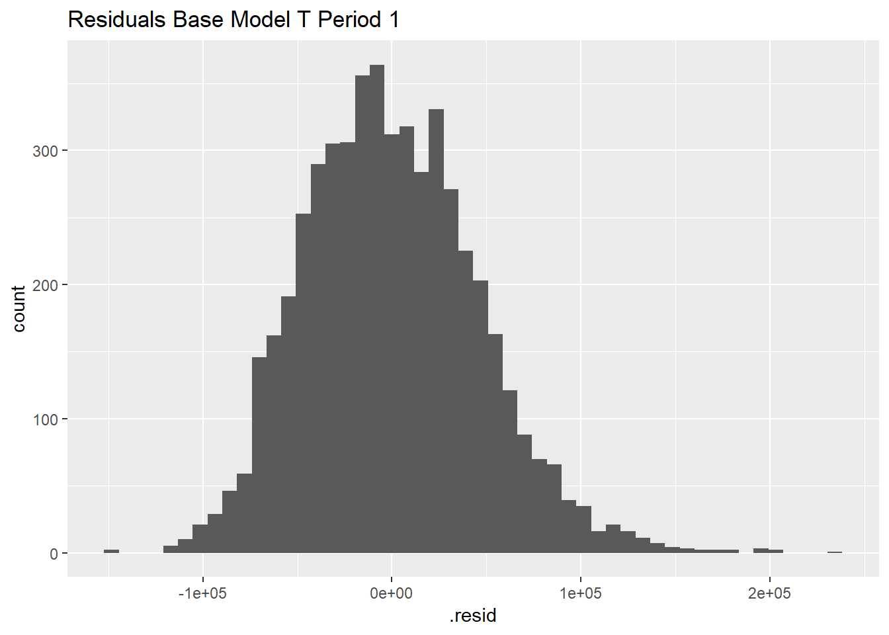
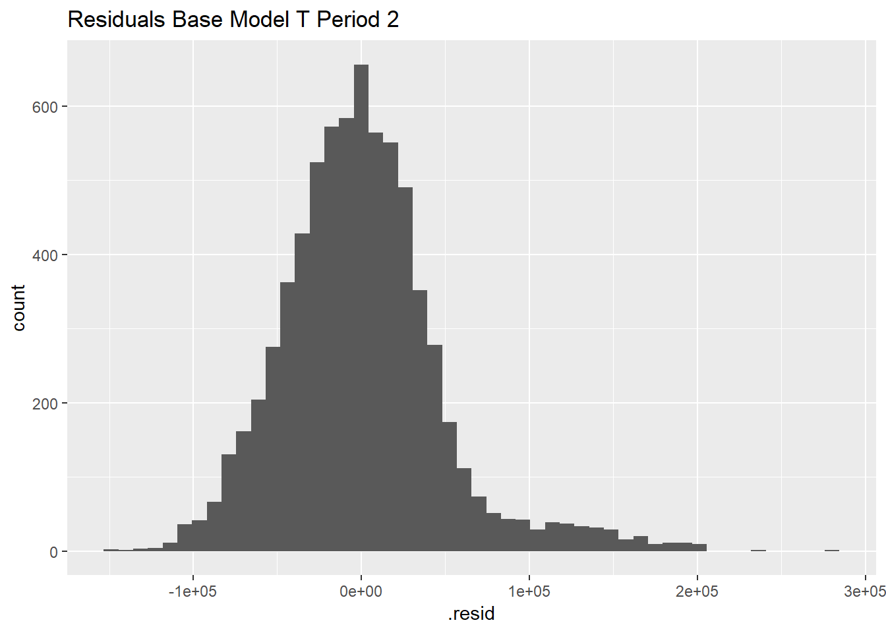

Chapter 5 Method 1 - Regression
Ordinary least squares linear regression is done firstly (Base Model) to establish the relationship between the variables. Log-linear regression is performed to determine the percentage change in resale price with respect to the change in the independent variables (Change Model).
The assumptions to have a good model fit are:
Variables are independently distributed
No multi-collinearity
Large outliers are rare
5.1 Linear Regression Model
5.1.1 Coefficients
| Dependent variable: | |||
|---|---|---|---|
| resale_price | |||
| BP period 1 | BP period 2 | BP period 3 | |
| floor_area_sqm | 2,689.456*** | 3,575.292*** | 4,297.322*** |
| (47.462) | (36.961) | (86.110) | |
| connected | 22,194.180*** | 41,669.390*** | 61,123.180*** |
| (1,808.657) | (1,431.850) | (3,403.679) | |
| lease_remaining | 3,321.929*** | 3,777.677*** | 3,645.197*** |
| (154.635) | (112.449) | (244.210) | |
| storey | 3,033.051*** | 3,851.335*** | 4,226.184*** |
| (153.964) | (125.236) | (284.796) | |
| Constant | -241,824.200*** | -297,502.400*** | -381,081.600*** |
| (13,006.660) | (9,177.533) | (21,795.130) | |
| Observations | 2,784 | 4,240 | 873 |
| R2 | 0.663 | 0.782 | 0.805 |
| Adjusted R2 | 0.663 | 0.782 | 0.804 |
| Residual Std. Error | 46,918.500 (df = 2779) | 45,808.740 (df = 4235) | 49,183.120 (df = 868) |
| F Statistic | 1,367.588*** (df = 4; 2779) | 3,805.884*** (df = 4; 4235) | 895.464*** (df = 4; 868) |
Note: *p<0.1; **p<0.05; ***p<0.01
The coefficients for connected is positive that is correctly predicted as houses nearer to MRT command a higher price. All coefficients are p-value<0.01 that shows a good way to estimate the effect. The constant has dropped significantly which may be prone to omitted variable bias. R-squared is not good for period 1 while period 2 and period 3 is high. Taking an example of a flat with floor area 100 square metres, storey 7, with lease remaining at 80,
| Period 1 | Period 2 | Period 3 | |
|---|---|---|---|
| Connected | 336,301 | 430,869 | 430,972 |
| Not connected | 314,107 | 389,200 | 369,849 |
This illustrates that there is additional benefit of staying near Bukit Panjang MRT. The stabilisation of period 2 and period 3 can be attributed to increase in number of Build to Order flats. As the transactions are not homogenous and certain flat type or flat size may be transacted so the data may be skewed.
| Dependent Variable | |||
|---|---|---|---|
| resale_price | |||
| T period 1 | T period 2 | T period 3 | |
| floor_area_sqm | 3,036.943*** | 3,729.498*** | 4,294.834*** |
| (28.858) | (25.294) | (58.870) | |
| connected | 2,016.711 | 19,151.510*** | 27,530.090*** |
| (2,063.843) | (1,817.018) | (4,927.825) | |
| lease_remaining | -1,009.607*** | 2,034.100*** | 1,131.236*** |
| (141.440) | (103.722) | (240.352) | |
| storey | 2,828.676*** | 3,997.770*** | 4,829.908*** |
| (187.757) | (163.370) | (442.000) | |
| Constant | 125,626.900*** | -115,154.200*** | -123,982.500*** |
| (10,348.700) | (7,293.582) | (18,006.770) | |
| Observations | 5,161 | 7,067 | 1,414 |
| R2 | 0.723 | 0.807 | 0.803 |
| Adjusted R2 | 0.723 | 0.807 | 0.802 |
| Residual Std. Error | 45,863.240 (df = 5156) | 47,581.530 (df = 7062) | 57,127.880 (df = 1409) |
| F Statistic | 3,367.789*** (df = 4; 5156) | 7,395.560*** (df = 4; 7062) | 1,433.155*** (df = 4; 1409) |
Note: *p<0.1; **p<0.05; ***p<0.01
The coefficients for connected is positive that is the same for BP. R-square is high which shows that the model is a good fit to predict housing prices. The constant has decreased from period 1 to period 2 could be countered due to lease_remaining parameter increased. Taking the same attributes for illustration,
| Period 1 | Period 2 | Period 3 | |
|---|---|---|---|
| Connected | 370,370 | 467,659 | 457,339 |
| Not connected | 368,353 | 448,508 | 429,809 |
The same trend for a fall from period 2 and period 3 is seen. The premium of locating near MRT after construction seemed to stabilise after a big jump after announcement. Notably, period 1 connected and not connected are very close, as the coefficient is $2016. This is useful to see the increment of price by isolating the connected variable.
5.1.2 Residuals
bp_ols_p1_re <- augment(bp_ols_p1, data = data_bp_p1)
bp_ols_p1_re %>%
ggplot(aes(x = .resid)) +
geom_histogram(bins = 50) + labs(title = "Residuals Base Model BP Period 1")bp_ols_p2_re <- augment(bp_ols_p2, data = data_bp_p2)
bp_ols_p2_re %>%
ggplot(aes(x = .resid)) +
geom_histogram(bins = 50) + labs(title = "Residuals Base Model BP Period 2")bp_ols_p3_re <- augment(bp_ols_p3, data = data_bp_p3)
bp_ols_p3_re %>%
ggplot(aes(x = .resid)) +
geom_histogram(bins = 50) + labs(title = "Residuals Base Model BP Period 3") 
The residuals for BP base models are close to a normal distribution. For period 3, the is a smaller dataset available since opening of the BP MRT, which make outliers stands out as it does not spread out as much.
5.2 Log-Linear Regression
bp_data_cont_p <- lm(log(resale_price) ~ floor_area_sqm + period + connected + near_pop_sch + distance_towncentre + park + flat_type + storey + lease_remaining, data_bp)
tamp_data_cont_p <- lm(log(resale_price) ~ floor_area_sqm + period + connected + near_pop_sch + distance_towncentre + park + flat_type + storey + lease_remaining, data_tamp)
bp_data_cat_p <- lm(log(resale_price) ~ floor_area_sqm + per + connected + near_pop_sch + distance_towncentre + park + flat_type + storey + lease_remaining, data_bp)
tamp_data_cat_p <- lm(log(resale_price) ~ floor_area_sqm + per + connected + near_pop_sch + distance_towncentre + park + flat_type + storey + lease_remaining, data_tamp)| Dependent variable: | ||||
|---|---|---|---|---|
| log(resale_price) | ||||
| (1) – BP Cont | (2) - BP Cat | (3) – T Cont | (4) – T Cat | |
| floor_area_sqm | 0.004*** | 0.005*** | 0.005*** | 0.006*** |
| (0.0002) | (0.0002) | (0.0002) | (0.0001) | |
| period | 0.146*** | 0.143*** | ||
| (0.002) | (0.002) | |||
| perthree | 0.216*** | 0.211*** | ||
| (0.004) | (0.003) | |||
| pertwo | 0.235*** | 0.213*** | ||
| (0.002) | (0.002) | |||
| connected | -0.037*** | -0.042*** | 0.010*** | 0.010*** |
| (0.005) | (0.004) | (0.003) | (0.003) | |
| near_pop_sch | 0.005** | 0.004** | ||
| (0.002) | (0.002) | |||
| distance_towncentre | -0.187*** | -0.193*** | -0.099*** | -0.098*** |
| (0.006) | (0.005) | (0.002) | (0.002) | |
| park | -0.004 | -0.009 | 0.001 | 0.005 |
| (0.006) | (0.006) | (0.004) | (0.004) | |
| flat_type3 ROOM | 0.485*** | 0.375*** | 0.286*** | 0.206*** |
| (0.040) | (0.034) | (0.026) | (0.023) | |
| flat_type4 ROOM | 0.545*** | 0.427*** | 0.363*** | 0.279*** |
| (0.041) | (0.035) | (0.026) | (0.023) | |
| flat_type5 ROOM | 0.633*** | 0.515*** | 0.408*** | 0.320*** |
| (0.042) | (0.036) | (0.028) | (0.024) | |
| flat_typeEXECUTIVE | 0.767*** | 0.643*** | 0.512*** | 0.427*** |
| (0.044) | (0.038) | (0.029) | (0.026) | |
| flat_typeMULTI-GENERATION | 0.649*** | 0.586*** | ||
| (0.039) | (0.034) | |||
| storey | 0.007*** | 0.007*** | 0.007*** | 0.007*** |
| (0.0002) | (0.0002) | (0.0003) | (0.0002) | |
| lease_remaining | 0.008*** | 0.009*** | 0.005*** | 0.005*** |
| (0.0003) | (0.0002) | (0.0002) | (0.0002) | |
| Constant | 11.058*** | 11.206*** | 11.452*** | 11.623*** |
| (0.053) | (0.044) | (0.033) | (0.029) | |
| Observations | 7,897 | 7,897 | 13,642 | 13,642 |
| R2 | 0.788 | 0.845 | 0.831 | 0.868 |
| Adjusted R2 | 0.788 | 0.845 | 0.831 | 0.868 |
| Residual Std. Error | 0.111 (df = 7885) | 0.095 (df = 7884) | 0.102 (df = 13628) | 0.090 (df = 13627) |
| F Statistic | 2,666.485*** (df = 11; 7885) | 3,574.714*** (df = 12; 7884) | 5,165.174*** (df = 13; 13628) | 6,414.803*** (df = 14; 13627) |
Note: *p<0.1; **p<0.05; ***p<0.01
The log-linear regression provides us the coefficients with the percentage change of the variable with respect to resale price. In ( 1) and (3), the period are taken as continuous variables. In (2) and (4), a new variable per is created with “one” meaning period 1 the base, “two” for period 2 and “three” for period 3. Resale prices for HDB connected to MRT station for Bukit Panjang has increased by an average of 14.6% from each increment of period. The change of 14.3% for Tampines which is comparable. The popular primary school coefficient is small at 0.5% and 0.4% for the continuous and categorical type of analysis. The level of signifiance is at 5%. Lease remaining for Bukit Panjang is 0.8%-0.9% and Tampines 0.5% for every year which is not a surpise as HDB has a fixed lease. Categorical per for BP from period 1 to 2 is 23.5% and period 2 and 3 is 21.6%. This shows the effect from pre-construction to construction is higher than construction to completion, because buyers could see the potential benefit of buying the flat. The coefficient for Tampines is 21.3% and 21.1% that is very stable regradless of the period. On whether being near the MRT has increase the price, Tampines has proven to be true with 1% increase. BP is a fall in 3.7% or 4.2%. This could be the effect of noise or main road which might deter potential buyers. For distance to town centre, the coefficients are negative. Being near town centre may not gain much benefits from HDB flat prices. Reasons include the higher human and road traffic passing through the homes that discourage buyers. The noise generated being near the MRT track for the East West Tampines or North South Choa Chu Kang line may also lowered the price.